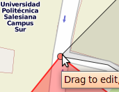
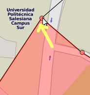
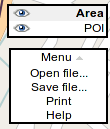

Illustration
1: Multiple areas
The TOE is a tool for online editing of POIs (points of interest) grouped by areas.
It's designed for keeping track of for example sales visits, friends or other things. There is a convenient auto-number feature that quickly sorts your visits inside an area when you print it.
There is no function for saving these data to servers online. The ONLY WAY OF SAVING DATA is by downloading them as OSM or SVG data. If you choose to download (Export) your work as OSM, you can later load (Import) the data to keep working on them.
The name TOE is an acronym for “TOE Online Editor”, but you can create your own backronym if you don't like recursive acronyms.
Click on the mode selector in the upper right corner until the POI entry is selected (bold).
Then press the SHIFT key on your keyboard and click to add a POI. A box where you can write some memo pops up. The Save button is supposed to be self-explanatory.
To move a POI, grab it, drag it to its new location and release it. X marks the spot.
To delete a POI, press the SHIFT key on your keyboard and click the POI to delete it. A warning will appear and if you're sure you want to delete the POI, click OK.
The areas have the function of grouping POIs. The POIs are not assigned to any area, so if you move the area limits, POIs that fall outside the area are NOT included in the area print. Another effect of this is that you can have multiple areas covering the same POIs. See illustration 1.
To create an area, click on the mode selector in the upper right corner until the Area entry is selected (bold):
Then press the SHIFT key on your keyboard and click to add an area corner node. Keep SHIFT down and click to add more nodes:
After a few clicks you'll see the area forming: The new nodes will be placed as new corner nodes breaking up the nearest area limit. In the example below, the right (east) imit was the nearest to the new point to the right.
If you were a bit too eager and added some point out in the wild, delete it by keeping SHIFT down and click the unwanted node. It will be deleted immediately, returning you to the nice triangle shown above.
To set a name/number for the area, click inside the selected area to pop-up the info bubble. Here you can set the name and number for the area. None of these are actually required, but might help you organize your POIs. The Save button is supposed to be self-explanatory.
To move an entire area, grab inside the selected area and drag it around. To move one of the limits, grab one of the red, round corner points and drag them around.
To ease the manipulation of adjacent areas, TOE has an corner snapping feature. The problem is illustrated in Illustration 2: Without corner snapping you'd have to move the area-separating limits twice, once for each area. It gets worse when you have more than two areas.
To snap together two areas, first sketch-draw the new area (approximately like you want it).
Then drag one of the corner nodes towards the corner of the other area. It will snap to the other area's corner when you're close enough. 
After the corners have snapped together, it's easier to rearrange the area limits: When you move one corner node, both (all) areas are affected:
To delete an entire area, click inside the selected area and click Delete. A warning dialog will appear, click OK if you're sure.
Splitting areas isn't supported with its own function. To split an area, just resize it to a smaller size, click outside to deselect it and draw a new area beside it. Snap the edges together, and you're left with a split area.
To print an area with the POIs inside it, click inside the selected area and click Print. You get to choose between “Google live map” printing or a static SVG image.
If you select Google Maps API, a new page with the map and visits will be opened. The area limits will be outlined on the map, and the POIs will be numbered automatically. Below the image the POIs are listed in numerical order, with their comments on the right. It's a live map print because you can zoom and drag the image around before printing.
To create a PDF you can print it to a PDF printer (like Primo PDF).
To save it <TODO this isn't possible for the moment? Images save but Google API session is lost it seems?> But you will not be able to edit it.
To save the data and be able to edit it later on, see Exporting data below.
<TODO> This function is not 100% ready yet; caveat emptor.
If you select SVG, it will just with a static image (zoom/drag around is not possible online). The benefit here is that you can open the SVG file with a file editor, for example inkscape, to manually touch-up the map (move/rotate/resize street names, labels, delete things, change colors … generally change everything you want).
To create a PDF you can print it to a PDF printer (like Primo PDF).
To save it, just press Save page in your internet browser. Since all things are static (unchangable), it won't be a problem to open it later. But you will not be able to edit it.
To save the data and be able to edit it later on, see Exporting data below.
When you feel you've done enough and want to continue later, you need to export the AREA and POI data. Nothing gets stored on the server, so you'll have to export the data and save it on your computer. All the data is combined in one single file.
To export the data, click the Menu on the right,  and choose Save file. You'll be presented with a download dialog; save the file somewhere to be able to load the data later.
When you want to keep working on data that was previously exported, choose Menu on the right, and choose Open file. Find the .osm file you want to load, and click Open. Note that you can import several different .osm files if you like, but make sure they don't overlap. You should expect strange behaviour if you load the same file twice, or load files with overlapping data.
The project is developed as open source. If you'd like to have a look at the source code, put up your own server or help out on coding, translating or helping in other ways, have a look at the project page on https://github.com/iqqmuT/area-editor
NOTE that the license for using this software is GPL3, so it is ILLEGAL TO HOST THIS PROJECT OR DERIVATIVES WITHOUT ALSO PROVIDING A DOWNLOAD LINK FOR THE RUNNING CODE. Open source is not the same as “I do what I want”, if you improve the project, you're LEGALLY BOUND TO SHARE YOUR IMPROVEMENTS.
Patents: If any patents that override the license apply to this project's code in the jurisdiction where the tool server is installed, you are personally responsible for paying the respective royalties. If you don't want to pay, you're not allowed to use the tool. If any applicable law prohibits this kind of disclaimers, then the use of this tool is prohibited in your country. Sorry. If you any time run into this problem, please contact the developers so we can try and find a way around the patent. Or be elected into the government and remove software patents altogether.
The data are exported in OSM (openstreetmap) data format but are NOT INTENDED to be submitted to the openstreetmap servers. This way the data can also be edited offline, with tools like josm or others. The data are your personal POIs, and while it is technically possible to store them on the openstreetmap servers, they do not have the correct tags to be useful on those servers. You would probably be banned from the openstreetmap servers if you started saving personal stuff on their public servers.
All external links on this page open in a new window or tab.
There are test servers running on http://arno.homelinux.org/toe/ and http://territories.tumppi.com/ but beware that they are running development versions of this project. Things could go wrong and you end up with an empty file when you save the day's work. Always mount a scratch monkey and find yourself a stable server for production use.
Last modified by Arno the